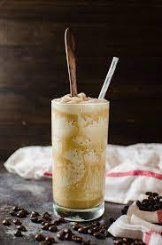

Mix cream, coffee, sugar, and vanilla extract together in a freezer-safe container. Cover container and freeze until coffee mixture is solid, at least 3 hours
Remove container from freezer and defrost in room temperature for 1 hour. Break coffee mixture apart with a fork creating a slush-like consistency. Transfer to a punch bowl or large pitcher